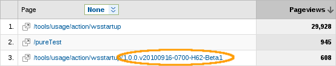
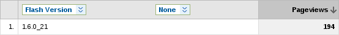

|
We fixed some minor bugs and improved in the following areas:
Usage Reporting now reports the Usage plugin
version allowing us to track the spread/usage
of nightly, development vs stable builds.
The version is added to the landing page URL.

Related Jira
Usage Reporting may now be disabled via a
system property:
-Dusage_reporting_enabled=false
(useful for tests or other headless runs)
Related Jira
Usage Reporting now reports the JDK that's
being used in the Flash Version field.

Related Jira
Usage Reporting may now be globally disabled
with a properties file on our servers, aka a
Kill-switch for the tracking.
Related Jira
Usage Reporting did not report AS and other
JBoss Tools components that did not have the default package naming ("org.jboss.tools.XXX")
Related Jira
|